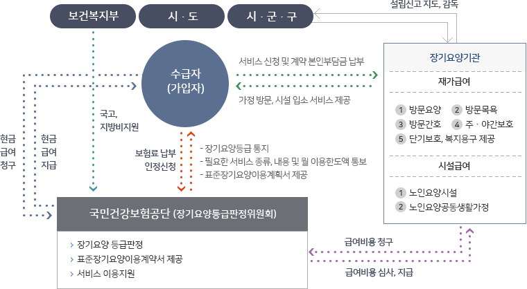

- >
- 노인장기요양보험
- >
- 노인장기요양보험
노인장기요양보험제도
- 의의
- 고령이나 노인성 질병 등으로 일상생활을 혼자서 수행하기 어려운 이들에게 신체활동 및 일상생활 지원 등의 서비스를 제공하여 노후 생활의 안정과 그 가족의 부담을 덜어주기 위한 사회보험제도
- 신청대상
- 소득수준과 상관없이 노인장기요양보험 가입자(국민건강보험 가입자와 동일)와 그 피부양자 의료급여수급권자로서 65세 이상 노인과 65세 미만의 노인성 질병이 있는 자
- 등급판정 기준
| 등급구분 | 판정기준 |
|---|---|
| 장기요양 1등급 | 일상생활에서 전적으로 다른 사람의 도움이 필요한 자로서 장기요양인정점수가 95점 이상인 자 |
| 장기요양 2등급 | 일상생활에서 상당 부분 다른 사람의 도움이 필요한 자로서 장기요양인정점수가 75점 이상 95점 미만인 자 |
| 장기요양 3등급 | 일상생활에서 부분적으로 다른 사람의 도움이 필요한 자로서 장기요양인정점수가 60점 이상 75점 미만인 자 |
| 장기요양 4등급 | 일상생활에서 일정부분 다른 사람의 도움이 필요한 자로서 장기요양인정점수가 51점 이상 60점 미만인 자 |
| 장기요양 5등급 | 치매환자로서 장기요양인정점수가 45점 이상 51점 미만인 자 |
- 급여대상
- 65세 이상 노인 또는 치매, 중풍, 파킨스병 등 노인성 질병을 앓고 있는 65세 미만인 자 중 6개월 이상의 기간 동안 일상생활을 수행하기 어려워 장기요양서비스가 필요하다고 인정되는 자 장기요양등급 : 1등급, 2등급, 3등급, 4등급, 5등급
- 장기요양인정 및 서비스 이용절차
- ① (공단 각 지사별 장기요양센터) 신청 → ② (공단직원) 방문조사 → ③ (등급판정위원회) 장기요양 인정 및 등급판정 → ④ (장기요양센터) 장기요양인정서 및 표준장기요양이용계획서 통보 → ⑤ (장기요양기관) 서비스 이용
- 시설급여
- 요양시설에 장기간 입소하여 신체활동 지원 등 제공
- 재가급여
- 가정을 방문하여 신체활동 및 가사활동 등 지원, 목욕, 간호 등 제공, 주간보호센터 이용, 복지용구 구입 또는 대여
- 특별현금급여
- 장기요양 인프라가 부족한 가정, 천재지변, 신체 · 정신 또는 성격 등 그 밖의 사유로 장기요양기관이 제공하는 장기요양급여를 이용하기 어렵다고 인정하는 경우 가족요양비 지급
- 장기요양기관
- 시설급여 제공기관(노인복지법상 노인요양시설 및 노인요양공동생활가정), 재가급여 제공기관(노인복지법상 재가노인복지시설 및 노인장기요양보험법상 재가장기요양기관) → 시 · 군 · 구청장의 지정 또는 설치신고
- 관리운영체계
- 
- 재원조달방식
-
- 장기요양보험료(‘16년) : 건강보험료액의 6.55%
- 노인장기요양보험 가입자는 국민건강보험 가입자와 동일, 건강보험료와 통합징수
- 장기요양보험료율: 보건복지부장관 소속 장기요양위원회의 심의를 거쳐 대통령령으로 명시
- 국가지원 장기요양보험료율 예상수입액의 20% 부담(국고)
- 의료급여수급권자의 장기요양급여비용, 의사소견서 발급비용, 방문간호지시서 발급비용 중 공단이 부담하여야할 비용 및 관리운영비의 전액을 국가와 지방자치단체가 분담
- 본인부담금
-
- 시설급여 20%(비급여: 식재료비, 이미용료 등은 본인부담), 재가급여 15%
- 의료급여수급권자 등 저소득층은 각각 1/2로 경감(시설 10%, 재가 7.5%)
- 기초생활수급권자는 무료